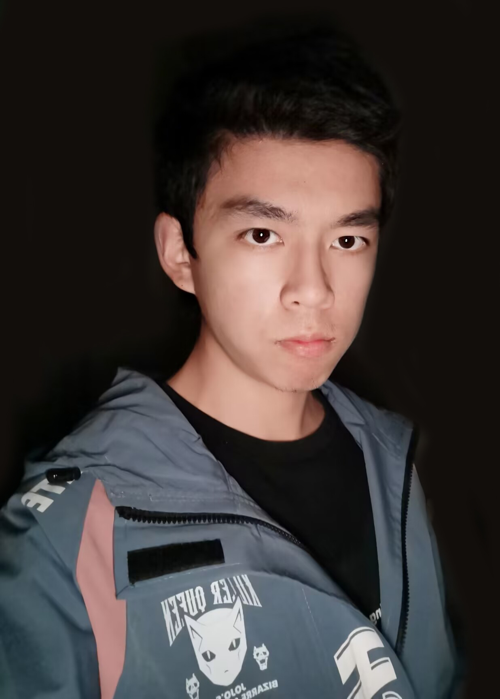

Chaofan Lin (in Chinese: 林超凡)

I'm an undergraduate at
ACM Honors Class,
Shanghai Jiao Tong University,
advised by
Prof. Yong Yu.
And I'm a research intern at
Catalyst, Carnegie Mellon University
and is now focusing on the design of relax (a
high-level IR for
Apache TVM)
training workflow.
My research interest lies on ML Systems, Compiler, virtual machine and Programming Language.
I am also deeply interested in some elegant and beautiful mathematical theories,
such as Set theory, Category theory, etc.
I am passionate about "building": build a delicate system or build self-consistent theory.
Every work of mine is an artwork of an artist for me. I believe there is no silver bullet
and compromisation is necessary in design.
Projects
Masterball
Course Project of Compilation Principle
A Compiler from Mx* language (which is a C++ & Java like
language designed for this course) to RV32I Assembly, with many optimizations on LLVM IR.
This assignment received a perfect score in
two different compilation courses.
NightWizard
Course Project of Computer System
A RISC-V CPU implemented in Verilog HDL. It uses Tomasulo algorithm for dynamic scheduling and supports
at most 120MHz clock rate to pass all testcases.
Education
Bachelor in Computer Science, Shanghai Jiao Tong University.
Aug. 2020 – Present.
A member of ACM Honor Class, Zhiyuan College.
Awards
National Scholarship.2022
Top 0.2% national-wide.
The Chinese Mathematics Competitions.2022
First Prize.
Mathematical Contest In Modeling and Interdisciplinary Contest In Modeling.
2021
Meritorious Winner.
Foresight-Sequoia Talent Development Fund.
2021
5 winners at Zhiyuan College each year.
Zhiyuan Undergraduate Excellence Award
2021
A-Level. Top 3% in Zhiyuan College.
Zhiyuan Honorary Scholarship
2020, 2021, 2022
Teaching
Teaching Assistant, Programming (Honor)
2021 Fall
With Prof. Huiyu Weng, Shanghai Jiao Tong University.
Teaching Assistant, Mathematical Logic
2022 Fall
With Prof. Prof. Qiang Yin and Yijia Chen, Shanghai Jiao Tong University.